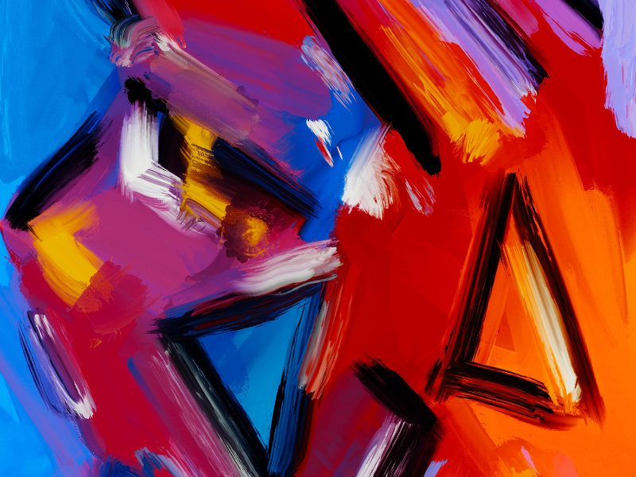

About Me
I'm a creatively-driven professional, with a penchant for deep diving to solve business-related problems, and an obsession for efficiency and automation. As a long-time business owner and consultant,
I've a developed deep understanding and appreciation for quality and efficiency when it comes to technical solutions. For the better part of the last decade,
I've been working as a freelance marketing consultant - helping a broad clientele to achieve their brand's visual design and merchandising goals; with services ranging from social & print design, to merch & web development. I've had the privilege and honor of working with some of the top brands in the world.
My interest in software development began when I set out to solve a bottleneck for my own business. What started as a personal business need, went on to spark an insatiable drive to learn more and hone my craft as a developer.
This ultimately led me to where I am today - currently enrolled in Georgia Tech's Full Stack Coding Bootcamp. My goal is to leverage the skills acquired from the program to help companies solve the problems they're currently faced with - increasing their impact in the market, and maximizing their potential.
Projects
Project One
